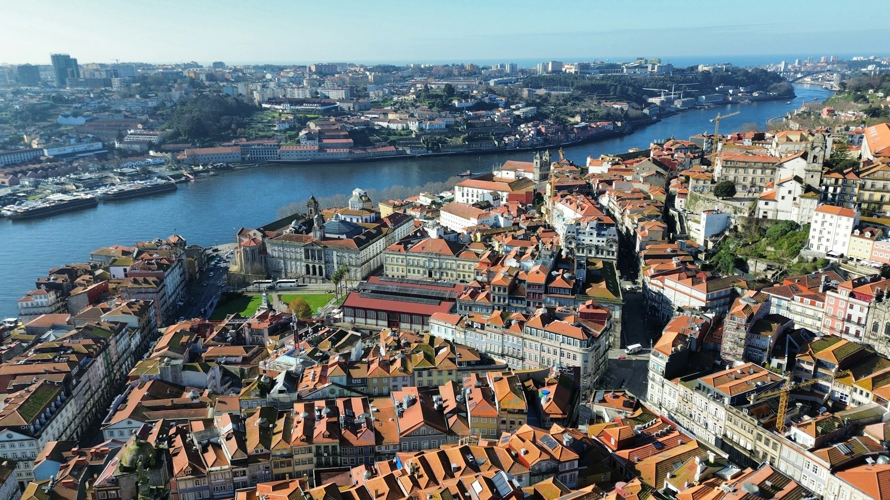

Start with the main costs
Write down the cost of travel and a place to stay. Add the cost of travelling between places.

Learn what to pack, how to plan your spending and how to travel between places.

Choose a bag you can carry easily. This helps when you walk to your hotel or change trains.
Start with the things you use every day. Think about the weather and the activities you want to do. Clothes that work together can help you pack less. Before you close your bag, check whether there is anything you are unlikely to use.
Work out how much your trip may cost. Keep some extra money for anything you have not planned. The total should include travel, a place to stay, food and activities. Writing these costs down can help you see what you can afford before making a booking.
Write down the cost of travel and a place to stay. Add the cost of travelling between places.
Plan how much you can spend each day on food, buses, trains and things to do.
Keep some money for costs you did not expect. Do not plan to spend all your money.

Compare the cost and time of each way to travel. Include the trip to the station or airport and the trip to your hotel.
A journey can take longer than the time shown on a ticket. You may need time to reach the station, find the right platform and wait for your next train. Keep travel days lighter so a delay does not affect too many other plans.
Choose the place you most want to visit. Add more places if you have enough time for travel and things to do.
Choose your dates and where to go. Compare travel and hotel prices. Check the rules for changing or cancelling a booking before you pay.
Keep your tickets, hotel address and list of places to visit together. Use our trip planner to write down your ideas.
Open the trip plannerLook at where it is on a map. Check how you would get there and how far it is from the places you want to visit. Read what is included in the price, look at recent guest reviews and check the booking terms.
Choose one or two main things you want to do. Leave time for meals, travel and breaks. Keep other ideas on a separate list so you can visit them if you have time.